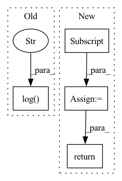

Pattern ID :29570

Before Change
self.log_output(predicts[0], targets[0], wer)
self.log("val_loss", loss)
self.log("val_batch_wer", wer)
return loss, wer
def test_step(self, batch, batch_idx):
After Change
def validation_step(self, batch: Tensor, batch_idx: int):
inputs, input_lengths, targets, target_lengths = batch
targets_ctc = targets[:, 1:-1]
outputs, output_lengths = self(inputs, input_lengths)
loss = self.criterion(
outputs.permute(1, 0, 2), targets_ctc, output_lengths, target_lengths
)
self.log("test loss", loss)
if batch_idx % self.log_idx == 0:
label_sequences, predict_sequences, wer = self.get_wer(
targets_ctc, inputs, input_lengths
)
self.log_output(predict_sequences[0], label_sequences[0], wer)
self.log("test wer", wer)
return loss
def test_step(self, batch: Tensor, batch_idx: int):
inputs, input_lengths, targets, target_lengths = batch
In pattern: SUPERPATTERN
Frequency: 3
Non-data size: 4
Instances
Fragment ID: 87700795
Project Name: manhph2211/vistt
Commit Name: 742be9424d91058a3c3e25adc4db742534fffab3
Time: 2022-08-30
Author: manhph5@vingroup.net
File Name: VASR/local/src/engine/trainer.py
M Class Name: ConformerModule
N Class Name: ConformerModule
M Method Name: validation_step(3)
N Method Name: validation_step(3)
M Parent Class: BaseModel
N Parent Class: pl.LightningModule
M File Name: VASR/local/src/engine/trainer.py
N File Name: VASR/local/src/engine/trainer.py
M Start Line: 72
M End Line: 103
N Start Line: 106
N End Line: 126
'>
Before Change
self.log_output(predicts[0], targets[0], wer)
self.log("test_loss", loss)
self.log("test_batch_wer", wer)
return loss, wer
def log_output(self, predict, target, wer):
After Change
def test_step(self, batch: Tensor, batch_idx: int):
inputs, input_lengths, targets, target_lengths = batch
targets_ctc = targets[:, 1:-1]
outputs, output_lengths = self(inputs, input_lengths)
loss = self.criterion(
outputs.permute(1, 0, 2), targets_ctc, output_lengths, target_lengths
)
self.log("test loss", loss)
if batch_idx % self.log_idx == 0:
label_sequences, predict_sequences, wer = self.get_wer(
targets_ctc, inputs, input_lengths
)
self.log_output(predict_sequences[0], label_sequences[0], wer)
self.log("test wer", wer)
return loss
'>
Fragment ID: 87700796
Project Name: manhph2211/vistt
Commit Name: 742be9424d91058a3c3e25adc4db742534fffab3
Time: 2022-08-30
Author: manhph5@vingroup.net
File Name: VASR/local/src/engine/trainer.py
M Class Name: ConformerModule
N Class Name: ConformerModule
M Method Name: test_step(3)
N Method Name: test_step(3)
M Parent Class: BaseModel
N Parent Class: pl.LightningModule
M File Name: VASR/local/src/engine/trainer.py
N File Name: VASR/local/src/engine/trainer.py
M Start Line: 105
M End Line: 136
N Start Line: 128
N End Line: 148
'>
Before Change
y_hat = self.forward(x)
y_hat = torch.nn.functional.softmax(y_hat, dim=1)
self.accuracy(y_hat, y)
self.log("val_acc", self.accuracy.compute(),
on_epoch=True, prog_bar=True)
def configure_optimizers(self):
optim = torch.optim.SGD(self.fc.parameters(), lr=30.)
scheduler = torch.optim.lr_scheduler.CosineAnnealingLR(optim, max_epochs)
After Change
// calculate number of correct predictions
_, predicted = torch.max(y_hat, 1)
num = predicted.shape[0]
correct = (predicted == y).float().sum()
return num, correct
def validation_epoch_end(self, outputs):
// calculate and log top1 accuracy
'>
Fragment ID: 87700797
Project Name: lightly-ai/lightly
Commit Name: dc74e2fde10b0c0c90887e9362baaf98b7a51b62
Time: 2021-11-19
Author: 43336610+guarin@users.noreply.github.com
File Name: docs/source/tutorials_source/package/tutorial_moco_memory_bank.py
M Class Name: Classifier
N Class Name: Classifier
M Method Name: validation_step(3)
N Method Name: validation_step(3)
M Parent Class: pl.LightningModule
N Parent Class: pl.LightningModule
M File Name: docs/source/tutorials_source/package/tutorial_moco_memory_bank.py
N File Name: docs/source/tutorials_source/package/tutorial_moco_memory_bank.py
M Start Line: 309
M End Line: 312
N Start Line: 333
N End Line: 339